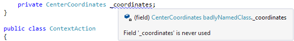
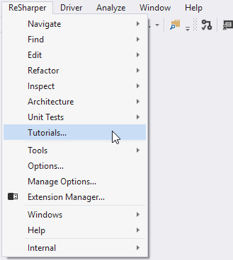
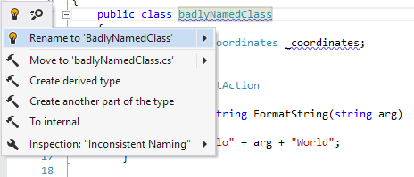
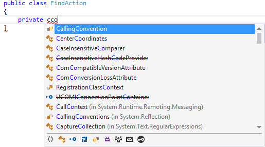
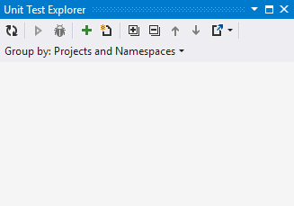
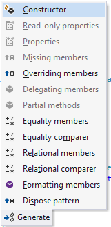
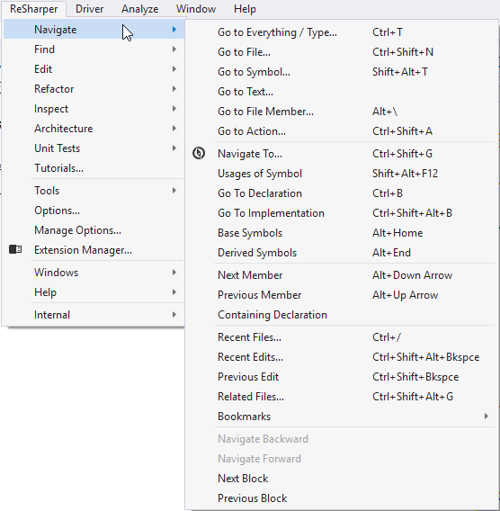
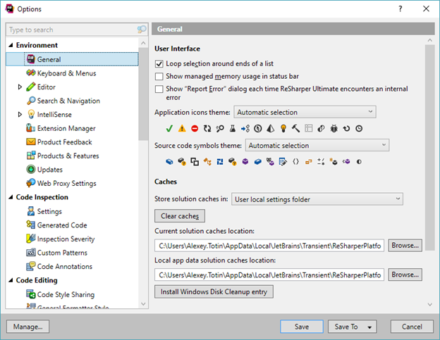
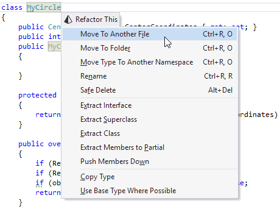
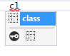

Integrate with ReSharper
ReSharper uses loosely coupled principle. To develop a ReSharper plugin means to declare and implement a particular integration point. ReSharper will care of the rest: the extension will be injected into ReSharper.
How does this actually look like? Typically, you:
- Mark a class with one of the special ReSharper attributes. For example, the
[Action]attribute tells ReSharper that this class describes an action (one of the integration points) and will register it in the action manager. - Work with ReSharper components that provide the functionality you need in your plugin. To obtain them, you specify the required components in the class constructor. ReSharper provides you the components using dependency injection. See an example.
Below you will find the list of most common ReSharper integration points.
Daemons and daemon stages

It’s all about as-you-type code analysis. For example, ReSharper displays “squiggly” warnings in your code.
Examples in this How To:
Actions

These are menu items, and toolbar items. You can expand the menu and the toolbar with your own items.
Examples in this How To:
Quick-fixes and context actions

These are context-dependent actions that ReSharper suggests by hitting Alt+Enter. ReSharper SDK allows you creating your own quick-fixes and context actions.
Examples in this How To:
Code completion

These are code completion menus that show suggestions based on user’s typing.
Examples in this How To:
- no examples yet
Reference providers
Apply references from an arbitrary abstract syntax tree node to another code element, such as supporting code completion and navigation from string literals to class or property names.
Tool windows

You can create your own tool windows by means of the ReSharper SDK.
Examples in this How To:
Generate menu

These are items in the Generate menu that allow user to create a bulk of code quickly without really typing it. This menu is context-dependent. For example, ReSharper suggests to create a constructor if a class doesn’t have it.
Examples in this How To:
- no examples yet
Navigation

These are all ReSharper actions that relate to navigation, like Go to Type, Go to Implementation, and so on. You can extend this list with your own navigation actions.
Examples in this How To:
Options pages

These are settings shown on the ReSharper’s Options page. You can create your own settings and setting groups.
Examples in this How To:
Refactorings

These are the code refactorings that ReSharper suggests depending on the context.
Examples in this How To:
- no examples yet
Code cleanup
ReSharper allows you to apply formatting and other code style preferences in a bulk mode to instantly eliminate code style violations in one or more files, in a project or in the entire solution.
Creating a new code formatting rule or editing an existing one doesn’t require creating a compiled ReSharper plugin (see declarative extension). That’s why code cleanup is out of the scope of this How To. Learn how to work with code cleanup in ReSharper documentation.
Live templates

Live templates are code fragments that can be quickly inserted into code. The code of the template can be a short expression, a complete construct, or even an entire class or method. For example, an if...else block, foreach block, class declaration, and so on.
A new live template can be created using the editor built in ReSharper (see declarative extension) and, therefore, doesn’t require developing a compiled ReSharper plugin. That’s why live templates are out of the scope of this How To. Learn how to create them in Live Templates.